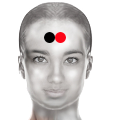

Deseo obsesivo
Par
nucleo acumbens - nucleo acumbens

Generalidades:
El Trastorno obsesivo compulsivo (TOC), coloquialmente denominado deseo obsesivo es un trastorno de ansiedad, caracterizado por pensamientos intrusivos, recurrentes y persistentes, que producen inquietud, aprensión, temor o preocupación, y conductas repetitivas denominadas compulsiones, dirigidas a reducir la ansiedad asociada.. Está relacionado con la zona del cerebro conocida comonucleo acumbens (se encuentra en lo profundo del cerebro a la altura del supraciliar, este grupo de células se encargan de la respuesta al placer.Puede incidir en sentimientos como la risa, el miedo, la agresión y regula mecanismos como el efecto placebo, la búsqueda de recompensa y las adicciones.